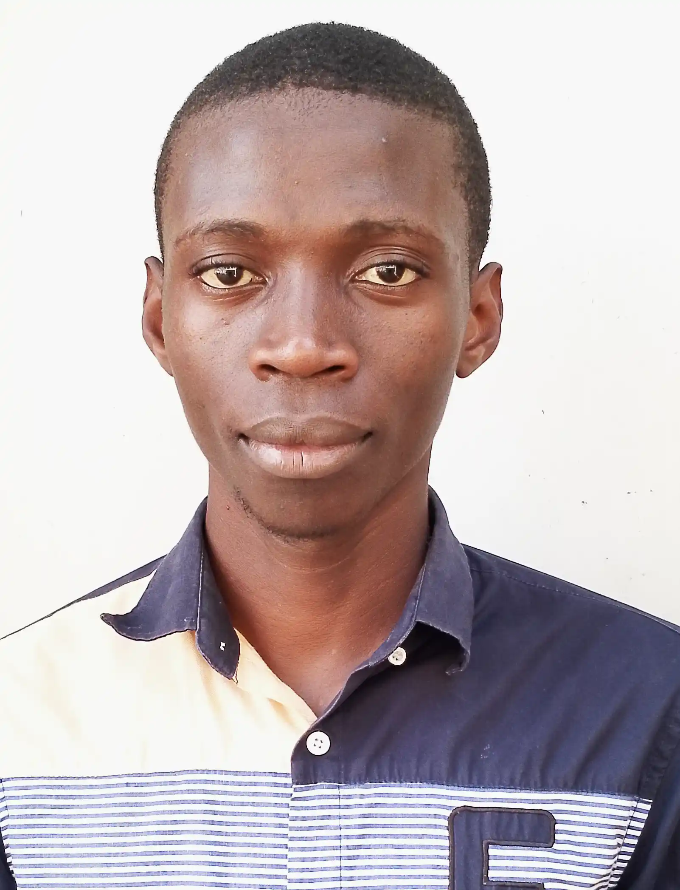

Home
About me
Medina is a focused and strategic scholar based in Brazzaville, Republic of the Congo, pursuing a Bachelor’s in Software Development through BYU-Pathway. He is currently enrolled in WDD 130 and CSE 111, while also completing the “100 Days of Code” Python bootcamp by Dr. Angela Yu. With a strong foundation in mathematical modeling, statistics, and LaTeX typesetting, Medina creates elegant, bilingual academic documents that blend technical rigor with pedagogical clarity. His passion for structure and accessibility is evident in the way he formats exercises, integrates explanatory remarks, and designs educational materials. Fluent in French and English, he excels in bilingual academic writing and translation. Medina is also deeply engaged in researching tech career trends, diploma pathways, and remote work opportunities. His short-term goals include building a strong GitHub portfolio and applying for internships or freelance roles. Long-term, he aims to become a hybrid full stack and DevOps developer, integrating AI and automation to stay future-proof. Medina’s character is defined by precision, curiosity, and a drive to communicate complex ideas clearly. He thrives on step-by-step guidance and values both technical mastery and teaching excellence—qualities that position him for a meaningful, globally relevant career in tech.
Student photo
web Certificate Courses
All
CSE
WDD
WDD 130
WDD 131
WDD 231